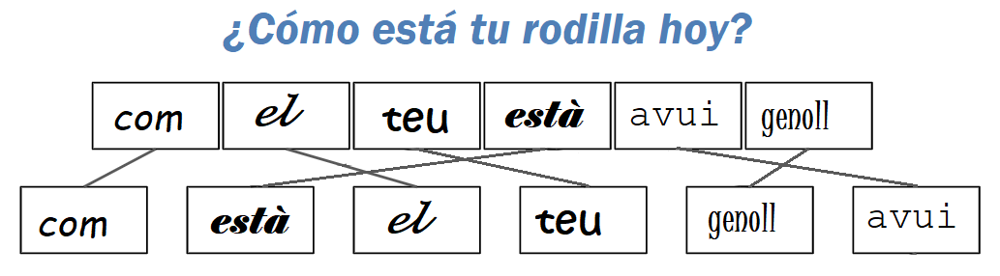

5 Arquitectura Cognitiva
Estás leyendo la segunda edición en progreso y en castellano de Enseñar Tecnología en Comunidad (Teaching Tech Together). Este capítulo está siendo objeto de una reestructuración y puede resultar confuso o incompleto
Hemos hablado acerca de modelos mentales como si fueran cosas reales, pero ¿qué es lo que realmente sucede en el cerebro de una persona cuando está aprendiendo? La respuesta corta es que no lo sabemos, la respuesta larga es que sabemos mucho más que antes. Este capítulo profundizará en qué hace el cerebro mientras el aprendizaje sucede y en cómo podemos aprovecharlo para diseñar y brindar lecciones de manera más efectiva.
5.1 ¿Qué es lo que sucede allí?
![esquema que presenta dos recuadros principales, uno llamado 'memoria de largo plazo' y otro 'memoria de corto plazo'. El recuadro 'memoria de largo plazo' contiene un modelo mental de cajas y flechas que se relacionan entre sí. En el recuadro 'memoria de corto plazo', hay una caja representando al canal visual y otra caja representando al canal verbal. Desde ambas cajas salen una flecha hacia un signo más desde el cual sale una relación llamada 'codificar' hacia la memoria de largo plazo. Desde la memoria de largo plazo sale una relación llamada 'recuperar' hacia la memoria de corto plazo. Las imágenes tomadas a partir de los ojos y el habla registrada por medio de los oídos están por fuera de los dos recuadros principales y se relacionan con los canales visuales y verbales de la memoria a corto plazo, respectivamente.](diagrams/cognitive-architecture.svg)
La Figure 5.1 es un modelo simplificado de la arquitectura cognitiva humana. El núcleo de este modelo es la separación entre la memoria a corto y a largo plazo vistas en la Section 4.2. La memoria a largo plazo es como tu sótano: almacena objetos de forma más o menos permanente pero tu conciencia no puede acceder a ella directamente. En cambio, confías en tu memoria a corto plazo, que es como el escritorio de tu mente.
Cuando necesitas algo, tu cerebro lo rescata de la memoria a largo plazo y lo coloca en la memoria a corto plazo. Por el contrario, la nueva información que llega a la memoria a corto plazo debe codificarse para poder ser almacenada en la memoria a largo plazo. Si esa información no está codificada y almacenada, no se recuerda y esto significa que no se ha aprendido.
La información ingresa a la memoria a corto plazo principalmente a través de tu canal verbal (para el habla) y del canal visual (para las imágenes) Un modelo más completo también incluiría el sentido del tacto, del olfato y del gusto, pero por ahora los ignoraremos.. Si bien la mayoría de las personas confía principalmente en su canal visual, cuando las imágenes y las palabras se complementan entre sí el cerebro hace un mejor trabajo al recordarlas: se codifican juntas, de modo que el recuerdo de una ayuda a activar el recuerdo de la otra.
Las entradas lingüísticas y visuales son procesadas por diferentes partes del cerebro humano y a su vez los recuerdos lingüísticos y visuales son almacenados también de manera separada. Esto significa que correlacionar flujos de información lingüísticos y visuales requiere esfuerzo cognitivo: si alguien lee algo mientras lo escucha en voz alta, su cerebro no puede evitar comprobar que obtiene la misma información por ambos canales.
Por lo tanto, el aprendizaje aumenta cuando la información se presenta de manera simultánea por dos canales diferentes, pero se reduce cuando esa información es redundante, en lugar de ser complementaria: tal fenómeno es conocido como efecto de atención dividida Mayer and Moreno (2003). Por ejemplo, en general las personas encuentran más difícil aprender de un video que tiene narración y capturas de pantalla que aprender de un video que únicamente tiene narración ó capturas (pero no ambos elementos), porque en el primer caso parte de su atención ha sido utilizada para chequear que la narración y las capturas se correspondan entre sí. Dos notables excepciones son las personas que aún no hablan bien un idioma y las que tienen algún impedimento auditivo u otras necesidades especiales, quienes quizás encuentren que el valor de la información redundante supera el esfuerzo de procesamiento adicional.
5.1.1 Fragmento a fragmento
El efecto de la atención dividida explica por qué es más efectivo dibujar un diagrama fragmento a fragmento mientras enseñas, en lugar de presentar todo el gráfico de una sola vez. Si las partes de un diagrama aparecen al mismo tiempo en que los gráficos son explicados, el/la estudiante correlaciona ambos elementos en su memoria. Así que luego, al enfocarte en una parte del diagrama, es más probable que tu estudiante active la recuperación de lo que fue dicho cuando esa parte fue dibujada.
El efecto de la atención dividida no significa que los/las estudiantes no deberían intentar conciliar múltiples flujos de información entrantes — después de todo, esto es lo que tienen que hacer en el mundo real Atkinson et al. (2000) —. En cambio, significa que la instrucción no debería solicitar a las personas que lo hagan mientras están incorporando habilidades por primera vez: el uso de múltiples fuentes de información de manera simultánea debe tratarse como una tarea de aprendizaje separada.
5.1.2 No todos los gráficos son equivalentes
Sung and Mayer (2012) presenta un elegante estudio que distingue los gráficos seductores (los cuales son altamente interesantes pero no son directamente relevantes al objetivo de la enseñanza), los gráficos decorativos (los cuales son neutros pero no son directamente relevantes al objetivo de la enseñanza), y por último los gráficos instructivos (los cuales sí son directamente relevantes al objetivo de la enseñanza). Los/las estudiantes que recibieron cualquier tipo de gráfico calificaron al material con un mayor puntaje, pero en verdad solo quienes recibieron gráficos instructivos obtuvieron mejores resultados.
Del mismo modo, Stampfer and Koedinger (2013), @Stam2014 descubrió que tener más información en realidad puede disminuir el rendimiento. Les mostraron a niños/as: imágenes, imágenes más números, o simplemente números, para que realicen dos tareas. Para algunos/as niños/as, recibir imágenes o bien imágenes más números fue mejor que recibir únicamente números; pero para otros/as, recibir imágenes superó a recibir imágenes más números, lo que superó a solo tener números.
5.2 Carga cognitiva
En Kirschner, Sweller, and Clark (2006), Kirschner, Sweller y Clark escribieron:
Aunque los enfoques educativos no guiados o mínimamente guiados son muy populares e intuitivamente atractivos…estos enfoques ignoran las estructuras que constituyen la arquitectura cognitiva humana así como la evidencia de estudios empíricos de los últimos cincuenta años. Dichas evidencias indican sistemáticamente que la instrucción guiada mínimamente es menos eficaz y menos eficiente que los enfoques educacionales con un fuerte énfasis en la orientación del proceso de aprendizaje del estudiante. La ventaja de la orientación disminuye sólo cuando los/las estudiantes tienen un conocimiento previo suficientemente elevado para proporcionar una orientación “interna”.
Más allá de la jerga, lo que estos autores afirmaban es que el hecho de que los/las estudiantes hagan sus propias preguntas, establezcan sus propias metas y encuentren su propio camino a través de un tema es menos efectivo que mostrarles cómo hacer las cosas paso a paso. El enfoque “elige tu propia aventura” se conoce como aprendizaje basado en la indagación y es intuitivamente atractivo: después de todo, ¿quién se opondría a tener estudiantes que utilicen su propia iniciativa para resolver problemas del mundo real de forma realista? Sin embargo, pedir a los/las estudiantes que lo hagan en un nuevo dominio es una sobrecarga, ya que les exige que dominen al mismo tiempo el contenido fáctico de un dominio y las estrategias de resolución de problemas. Más específicamente, la teoría de la carga cognitiva propone que las personas tienen que lidiar con tres cosas cuando está aprendiendo:
- Carga intrínseca
-
es lo que las personas tienen que tener en cuenta para aprender el material nuevo.
- Carga pertinente
-
es el esfuerzo mental (deseable) requerido para vincular la nueva información con la antigua, que es una de las distinciones entre el aprendizaje y la memorización.
- Carga extrínseca
-
es cualquier cuestión que distraiga del aprendizaje.
La teoría de la carga cognitiva sostiene que las personas tienen que dividir una cantidad fija de memoria de trabajo entre estas tres cosas. Nuestro objetivo como docentes es maximizar la memoria disponible para manejar la carga intrínseca, lo cual significa reducir la carga pertinente en cada paso y eliminar la carga extrínseca.
5.2.1 Problemas de Parsons
Un tipo de ejercicio que puede ser explicado en términos de carga cognitiva se utiliza a menudo en la enseñanza de idiomas. Supongamos que le pides a alguien que traduzca la frase “¿Cómo está tu rodilla hoy?” de castellano a catalán. Para resolver el problema, necesitan recordar tanto el vocabulario como la gramática, que es una carga cognitiva doble. Si, en lugar de traducir desde cero, les pides que pongan “com”, “està”, “el”, “teu”, “genoll” y “avui” en el orden correcto, les permites que se centren únicamente en el aprendizaje de la gramática. Sin embargo, si escribes estas palabras en seis fuentes o colores diferentes, has aumentado la carga cognitiva extrínseca, porque involuntariamente (y posiblemente de manera inconsciente) invertirán algo de esfuerzo tratando de averiguar si las diferencias entre las palabras son significativas de acuerdo a sus colores Figure 5.2.

El equivalente en programación de este ejemplo se llama problema de ParsonsNombrado así debido a uno de sus creadores. Parsons and Haden (2006).
Cuando enseñes a programar, puedes darles a tus estudiantes las líneas de código que necesitan para resolver un problema y pedirles que las ordenen en el orden correcto. Esto les permite concentrarse en el flujo de control y en las dependencias de datos, sin distraerse con la denominación de las variables o tratando de recordar qué funciones llamar. Múltiples estudios han demostrado que los problemas de Parsons demandan menos tiempo de resolución y producen resultados educativos equivalentes @Eric2017
5.2.2 Ejemplos desvanecidos (o con espacios en blanco)
Otro tipo de ejercicio que se puede explicar en términos de carga cognitiva es dar a tus estudiantes una serie de ejemplos desvanecidos (faded examples en inglés). El primer ejemplo de una serie presenta un uso completo de una estrategia particular de resolución de problemas. El siguiente problema es del mismo tipo, pero tiene algunas lagunas que tu estudiante debe llenar. Cada problema sucesivo da menos andamiaje (scaffolding en inglés), hasta que se pide resolver un problema completo desde cero. Al enseñar álgebra en la escuela secundaria, por ejemplo, podríamos comenzar con esto:
| (4x + 8)/2 | = | 5 |
| 4x + 8 | = | 2 * 5 |
| 4x + 8 | = | 10 |
| 4x | = | 10 - 8 |
| 4x | = | 2 |
| x | = | 2 / 4 |
| x | = | 1 / 2 |
y luego pedir que los/las estudiantes resuelvan esto:
| (3x - 1)*3 | = | 12 |
| 3x - 1 | = | _ / _ |
| 3x - 1 | = | 4 |
| 3x | = | _ |
| x | = | _ / 3 |
| x | = | _ |
y esto:
| (5x + 1)*3 | = | 4 |
| 5x + 1 | = | _ |
| 5x | = | _ |
| x | = | _ |
y, finalmente, esto:
| (2x + 8)/4 | = | 1 |
| x | = | _ |
Un ejercicio similar para enseñar Python podría comenzar mostrando a estudiantes cómo encontrar la longitud total de una lista de palabras:
# largo_total(["rojo", "verde", "azul"]) => 12
define largo_total(lista_de_palabras):
total = 0
for palabra in lista_de_palabras:
total = total + length(palabra)
return totaly luego pidiendo que llenen los espacios en blanco en este otro código (lo que centra su atención en las estructuras de control):
# largo_palabra(["rojo", "verde", "azul"]) => [3, 5, 4]
define largo_palabra(lista_de_palabras):
lista_de_longitudes = []
for ____ in ____:
append(lista_de_longitudes, ____)
return lista_de_longitudesEl siguiente problema podría ser este (que centra su atención en actualizar el resultado final):
# juntar_todo(["rojo", "verde", "azul"]) => "rojoverdeazul"
define juntar_todo(lista_de_palabras):
palabras_unidas = ____
for ____ in ____:
____
return palabras_unidasFinalmente, los/las estudiantes tendrán que escribir una función completa por su cuenta:
# generar_acronimo(["rojo", "verde", "azul"]) => "RVA"
define generar_acronimo(lista_de_palabras):
____Los ejemplos desvanecidos funcionan porque presentan la estrategia de resolución de problemas fragmento por fragmento. En cada paso, los/las estudiantes tienen un nuevo problema que abordar, lo cual es menos intimidante que una pantalla en blanco o una hoja de papel en blanco (Section 10.11). También anima a que los/las estudiantes piensen en las similitudes y diferencias entre varios enfoques, lo que ayuda a crear los vínculos en sus modelos mentales y de ese modo facilita la recuperación de la información.
La clave para construir un buen ejemplo desvanecido es pensar en la estrategia de resolución de problemas que se pretende enseñar. Por ejemplo, los problemas de programación sobre todo utilizan el patrón de diseño acumulativo, en el que los resultados del procesamiento de elementos de una colección se agregan repetidamente a una sola variable de alguna manera para crear el resultado final.
5.2.3 Aprendizaje cognitivo
Un modelo alternativo de aprendizaje e instrucción que también usa andamiaje y desvanecimiento es el aprendizaje cognitivo, que enfatiza la forma en que un/a docente transmite habilidades y conocimientos a un/a estudiante. El/la docente proporciona modelos de desempeño y resultados, luego entrena a las personas novatas explicando qué están haciendo y por qué Collins, Brown, and Holum (1991), Caspersen and Bennedsen (2007). El/la estudiante reflexiona sobre su propia resolución de problemas, por ejemplo, pensando en voz alta o criticando su propio trabajo, y finalmente explora problemas de su propia elección.
Este modelo nos dice que los/las docentes deben presentar varios ejemplos al explicar una nueva idea para que los/las estudiantes puedan ver qué generalizar, y que deben variar la forma del problema para dejar en claro cuáles son y cuáles no son características superficialesPor mucho tiempo creí que la variable que contenía el valor que una función iba a devolver tenía que llamarse
resultado, porque mi docente siempre usaba ese nombre en los ejemplos.. Los problemas deben presentarse en contextos del mundo real, y debemos fomentar la autoexplicación para ayudar a los/las estudiantes a organizarse y dar sentido a lo que se les acaba de enseñar (Section 6.1).
5.2.4 Sub-objetivos etiquetados
Etiquetar sub-objetivos significa dar nombre a los pasos en una descripción paso a paso de un proceso de resolución de problemas. Margulieux, Catrambone, and Guzdial (2016) , Morrison et al. (2016) descubrieron que al etiquetar los sub-objetivos, los/las estudiantes resolvían mejor los problemas de Parsons, y se observa el mismo beneficio en otros dominios Margulieux, Guzdial, and Catrambone (2012). Volviendo al ejemplo de Python usado anteriormente, los objetivos secundarios para encontrar la longitud total de una lista de palabras o construir un acrónimo son:
Crea un valor vacío del tipo a obtener.
A partir de la variable del bucle, obtén el valor que se agregará al resultado.
Actualiza el resultado con ese valor.
Etiquetar sub-objetivos funciona porque agrupar los pasos relacionados en fragmentos con nombre (Section 4.2) ayuda a tus estudiantes a distinguir lo que es genérico de lo que es específico del problema en cuestión. También les ayuda a construir un modelo mental de ese tipo de problema, de modo que luego pueden resolver otros problemas de ese tipo, y les da una oportunidad natural para la auto-explicación (Section 6.1).
5.2.5 Manuales mínimos
La aplicación más pura de la teoría de la carga cognitiva puede ser el manual mínimo de John Carroll Carroll et al. (1987), Carroll (2014). Su punto de partida es una cita de un usuario: “Quiero aprender a hacer algo, no aprender a hacer todo”. Carroll y sus colegas rediseñaron la capacitación para presentar cada idea como una tarea autónoma de una sola página: un título que describa de qué trata la página, instrucciones paso a paso sobre cómo hacer una sola cosa (por ejemplo, cómo eliminar una línea en blanco en un editor de texto) y luego varias notas sobre cómo reconocer y resolver problemas comunes. Descubrieron que reescribir los materiales de capacitación de esta manera los hacía más cortos en general y que las personas que los usaban aprendían más rápido. Estudios posteriores confirmaron que este enfoque superó al enfoque tradicional independientemente de la experiencia previa con computadoras Lazonder and van der Meij (1993). Carroll (2014) resumieron este trabajo diciendo:
Nuestros diseños “minimalistas” buscaban aprovechar la iniciativa de cada usuario/a y el conocimiento previo, en lugar de controlarlo mediante advertencias y pasos ordenados. Se enfatizaba que los/las usuarios/as generalmente aportan mucha experiencia y conocimiento a este aprendizaje, por ejemplo, conocimiento sobre el dominio de la tarea, y que dicho conocimiento podría ser un recurso para los/as diseñadores/as de instructivos. El minimalismo aprovechó los episodios de reconocimiento, diagnóstico y corrección de errores, en lugar de intentar simplemente prevenirlos. Es decir, enmarcó la resolución de problemas y la corrección como oportunidades de aprendizaje en lugar de aberraciones.
5.3 Otros modelos de aprendizaje
Quienes critican la teoría de la carga cognitiva a veces han argumentado que cualquier resultado puede justificarse a posteriori al etiquetar como carga extrínseca a aquello que perjudica el rendimiento y como carga intrínseca o pertinente a aquello que no lo perjudica. Sin embargo, la instrucción basada en la teoría de la carga cognitiva es innegablemente efectiva. Por ejemplo, Mason, Seton, and Cooper (2016) rediseñó un curso de base de datos para eliminar la atención dividida y los efectos de redundancia y para proporcionar ejemplos prácticos y con sub-objetivos. El nuevo curso redujo la tasa de reprobación del examen en un 34% y aumentó la satisfacción de los/las estudiantes.
Una década después de la publicación de Kirschner, Sweller, and Clark (2006), un número creciente de personas cree que la teoría de la carga cognitiva y los enfoques basados en la investigación son compatibles si se ven de la manera correcta. Kalyuga and Singh (2015) sostiene que la teoría de la carga cognitiva es básicamente una microgestión del aprendizaje dentro de un contexto más amplio que considera cuestiones como la motivación, mientras que Kirschner et al. (2018) extiende la teoría de la carga cognitiva para incluir aspectos colaborativos del aprendizaje. Al igual que con Markovits and Weinstein (2018) (discutido en la Section 6.1), las perspectivas de los/las investigadores/as pueden diferir, pero la implementación práctica de sus teorías a menudo termina siendo la misma.
Uno de los desafíos en la investigación educativa es que lo que queremos decir con “aprendizaje” resulta complicado una vez que se mira más allá del aula occidental estandarizada. Dos perspectivas específicas de la psicología educacional han influido en este libro. La que hemos utilizado hasta ahora es el cognitivismo, que se centra en conceptos como el reconocimiento de patrones, la formación de la memoria y el recuerdo. Es bueno para responder preguntas de bajo nivel, pero generalmente ignora cuestiones más importantes como, “¿Qué queremos decir con ‘aprendizaje’?” y “¿Quién tiene poder de decisión?” La segunda perspectiva utilizada es el aprendizaje situado, que se centra en integrar a las personas en una comunidad y reconoce que la enseñanza y el aprendizaje siempre están arraigados en quiénes somos y quiénes aspiramos a ser. Lo discutiremos con más detalle en el Chapter 14.
El sitio web de [Teorías de Aprendizaje][learning-theories] (Learning Theories en inglés) y Wiburg et al. (2016) tienen buenos resúmenes de estas y otras perspectivas. Además del cognitivismo, las que se encuentran con mayor frecuencia incluyen el conductismo (que trata la educación como un condicionamiento de estímulo/respuesta), el constructivismo (que considera al aprendizaje como un proceso activo durante el cual los/las estudiantes construyen conocimiento por sí mismos/as) y el conectivismo (que sostiene que el conocimiento se distribuye, que el aprendizaje es el proceso de navegar, crecer y podar conexiones, y que enfatiza los aspectos sociales del aprendizaje que internet hace posible). Estas perspectivas pueden ayudarnos a organizar nuestros pensamientos, pero en la práctica siempre tenemos que probar nuevos métodos en clase, con estudiantes reales, para descubrir qué tan bien equilibran las muchas fuerzas en juego.
5.4 Ejercicios
5.4.1 Crear un ejemplo desvanecido (parejas/30’)
Es muy común que en los programas se cuenten cuántas cosas caen en diferentes categorías: por ejemplo, cuántas veces aparecen colores diferentes en una imagen o cuántas veces aparecen palabras diferentes en un párrafo de texto.
Crea un ejemplo breve (no más de 10 líneas de código) que muestre a las personas cómo hacer esta tarea. Luego, crea un segundo ejemplo que resuelva un problema similar de una manera similar, pero que tenga un par de espacios en blanco para que los/las estudiantes los completen. ¿Cómo decides qué desvanecer? ¿Cuál sería el siguiente ejemplo de la serie?
Define el público de tus ejemplos. Por ejemplo, ¿son personas novatas que solo conocen algunos conceptos básicos de programación? ¿O son estudiantes con alguna experiencia en programación?
Muestra tu ejemplo a tu pareja, pero no le digas para qué nivel crees que es. Una vez que tu pareja haya llenado los espacios en blanco, pídele que adivine el nivel de estudiante previsto.
Si entre tus estudiantes hay personas que no programan en absoluto, intenta ubicarlos en diferentes grupos y pídeles que hagan el papel de estudiantes en sus grupos. Alternativamente, elige un dominio de problema diferente con el que desarrollar tu ejemplo desvanecido.
5.4.2 Clasificación de carga (grupos pequeños/15’)
Elige una lección corta que alguna persona de tu grupo haya enseñado o tomado recientemente.
Haz un listado con viñetas de las ideas, instrucciones y explicaciones que contiene la lección.
Clasifica cada elemento de tu listado como carga intrínseca, pertinente o extrínseca. ¿En qué ítems todas las personas del grupo estuvieron de acuerdo? ¿En cuáles estuvieron en desacuerdo y por qué?
(El ejercicio “Notar tus puntos ciegos” en la Section 4.4 te dará una idea de cuán detallado debe ser tu listado de ítems).
5.4.3 Crear un problema de Parsons (en parejas/20’)
Escribe cinco o seis líneas de código que hagan algo útil, mézclalas y pídele a tu pareja que las ponga en orden. Si estás utilizando un lenguaje basado en indentación como Python, no utilices sangría en ninguna de las líneas; si estás utilizando un lenguaje de llaves como Java, no incluyas ninguna de las llaves. (Si tu grupo incluye personas que no programan, usa un dominio de problema diferente, como, por ejemplo, hacer budín de pan).
5.4.4 Manuales mínimos (individual/20’)
Escribe una guía de una página para hacer algo que tus estudiantes puedan encontrar en una de tus clases, como centrar el texto horizontalmente o imprimir un número con un cierto número de dígitos después del punto decimal. Intenta enumerar al menos tres o cuatro resultados incorrectos que tu estudiante pueda obtener e incluye una explicación de una o dos líneas de por qué ocurre cada uno y cómo corregirlo.
5.4.5 Aprendizaje cognitivo (parejas/15’)
Elige un problema de codificación que puedas resolver en dos o tres minutos y piensa en voz alta mientras lo resuelves, al mismo tiempo tu pareja te hace preguntas sobre lo que estás haciendo y por qué. No solo explica lo que estás haciendo, sino también por qué lo estás haciendo, cómo sabes que es lo correcto y qué alternativas has considerado pero descartado. Cuando hayas terminado, intercambia roles con tu pareja y repite el ejercicio.
5.4.6 Ejemplos resueltos (parejas/15’)
Ver ejemplos resueltos ayuda a las personas a aprender a programar más rápido que simplemente escribiendo mucho código Skudder and Luxton-Reilly (2014), y desconstruir el código rastreándolo o depurándolo también aumenta el aprendizaje Griffin (2016). Trabajando en parejas, revisa un fragmento de código de 10 a 15 líneas y explica qué hace cada declaración y por qué es necesaria. ¿Cuánto tiempo demoras? ¿Cuántas cosas crees que necesitas explicar por línea de código?
5.4.7 Gráficos críticos (individual/30’)
Mayer (2009) , Miller (2016) presentan seis principios para una buena enseñanza de gráficos:
- Señalización:
-
resalta visualmente los puntos más importantes para que se destaquen del material menos crítico.
- Contigüidad espacial:
-
coloca los subtítulos lo más cerca posible de los gráficos para compensar el costo de cambiar entre la imagen y el texto.
- Contigüidad temporal:
-
Presenta narraciones habladas y gráficos tan seguidos en el tiempo como sea práctico. (Presentar ambos a la vez es mejor que presentarlos uno tras otro).
- Segmentación:
-
Cuando presentes una secuencia larga de material o cuando tus estudiantes no tengan experiencia en el tema, divide la presentación en segmentos cortos y deja que los/las estudiantes controlen la rapidez con que avanzan al siguiente.
- Pre-entrenamiento:
-
Si tus estudiantes no conocen los conceptos y la terminología principales que utilizas en la presentación, enseña solo esos conceptos y términos de antemano.
- Modalidad:
-
las personas aprenden mejor de las imágenes con narración que de las imágenes con texto, a menos que no sean hablantes nativas del idioma de la lección o que haya palabras o símbolos técnicos.
Elige un video de una lección o charla en línea que utilice diapositivas u otras presentaciones estáticas y califica sus gráficos como “deficientes”, “promedio” o “buenos” de acuerdo con estos seis criterios.
5.5 Revisión
![el pensamiento está limitado por la carga cognitiva. Esta carga cognitiva puede ser intrísica (que es deseable), pertinente (que debería ser reducida) y extrínseca (que debería ser eliminada). El pensamiento accede a la memoria de corto plazo, el cual codificado pasa a la memoria de largo plazo desde la cual se puede recuperar a la memoría de corto plazo para ser utilizado. El discurso usa el canal lingüístico, las imágenes usan el canal visual y el texto usa ambos canales. El canal visual puede reforzar o puede conflictuar el canal lingüístico. Estos canales integrados se almacenan en la memoria de corto plazo.](diagrams/conceptmap-cognitive-load.svg)